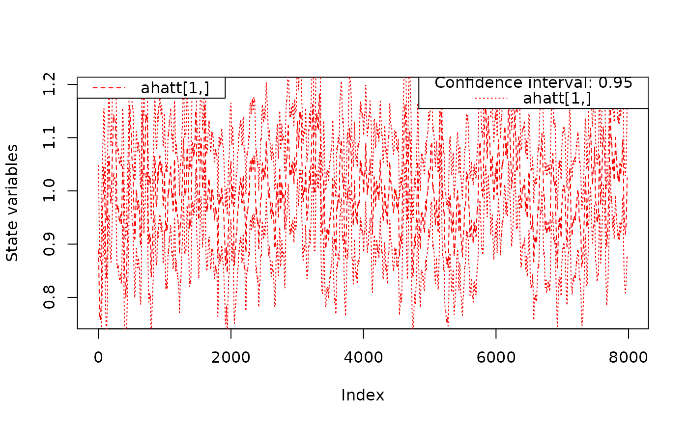

Plotting method for objects of class fks. This function
provides tools visualisation of the state vector of the Kalman smoother output
The output of fks.
The confidence interval in case type == "state". Set
CI to NA if no confidence interval shall be plotted.
An vector giving the indexes of the predicted state variables
which shall be plotted if type == "state".
The state variables are plotted. By the argument ahatt.idx, the user can specify
which of the smoothed (\(a_{t|n}\)) state variables will be drawn.
## <--------------------------------------------------------------------------->
## Example 3: Local level model for the treering data
## <--------------------------------------------------------------------------->
## Transition equation:
## alpha[t+1] = alpha[t] + eta[t], eta[t] ~ N(0, HHt)
## Measurement equation:
## y[t] = alpha[t] + eps[t], eps[t] ~ N(0, GGt)
y <- treering
y[c(3, 10)] <- NA # NA values can be handled
## Set constant parameters:
dt <- ct <- matrix(0)
Zt <- Tt <- array(1,c(1,1,1))
a0 <- y[1] # Estimation of the first width
P0 <- matrix(100) # Variance of 'a0'
## Estimate parameters:
fit.fkf <- optim(c(HHt = var(y, na.rm = TRUE) * .5,
GGt = var(y, na.rm = TRUE) * .5),
fn = function(par, ...)
-fkf(HHt = array(par[1],c(1,1,1)), GGt = array(par[2],c(1,1,1)), ...)$logLik,
yt = rbind(y), a0 = a0, P0 = P0, dt = dt, ct = ct,
Zt = Zt, Tt = Tt)
## Filter tree ring data with estimated parameters:
fkf.obj <- fkf(a0, P0, dt, ct, Tt, Zt, HHt = array(fit.fkf$par[1],c(1,1,1)),
GGt = array(fit.fkf$par[2],c(1,1,1)), yt = rbind(y))
fks.obj <- fks(fkf.obj)
plot(fks.obj)
lines(as.numeric(y),col="blue")
